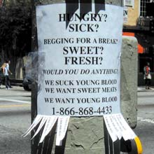
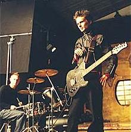
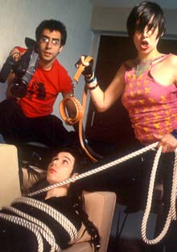
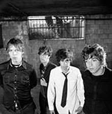
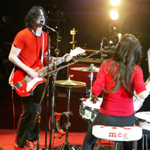
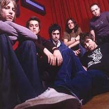
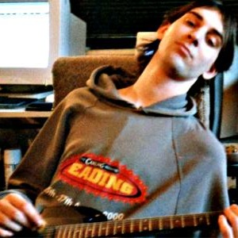

|
It’s time for music lesson 2 with ben and seb. We are the Burger King to Joe and Simons MacDonald's. Pepsi to their Coca Cola and Sainsbury's to their Tesco. Actually we are more like Kwik Save, own brand cola from Kwik Save and frozen chips and burgers from Kick Save. Anyway music: Here are ten of our favourite songs from last year. The links don't work any more for legal reasons:  Ben: Went to see Radiohead at Earls court in November and they were in a good mood for a change. This is probably the best song on their new album. It's a bit scary. I could listen to this all day. Seb: This song is so amazing. I could laugh and yak all day to it. When we went to see it live Thom was dancing around to it. When I hear it I want to do the same. Very strange lyrics. Contrary to what Ben said it is not the best song on their new album  Seb: This song is actually a stroke of genius. Matt Bellamy is wearing just socks and a phone. One of my favourite songs ever. We hoped they'd do it live but instead Matt slid around playing mental guitar and singing. Ben: Matt from Muse has never had a piano lesson and only 2 Spanish guitar lessons, which he said were a big mistake. You can hear the Spanish guitar on a lot of the tracks and Tim agrees that is sounds good. But what would muse sound like without that?  Seb: Ok when I was riding trails at Tim and Ben's house it came time to go home. I went over to the other platform and Ben and Tim were sitting on their bikes practising barspins or something. I shouted out to whether Ben likes yeah yeah yeahs. He says the woman had a really annoying voice. I get to bishops Stortford. Buy their album. Love it. Ben realises I have better taste. Ben: I was referring to an interview with them on the radio. she talks like a typical cheerleader. They were live on the radio last night and did an acoustic version of this. It makes me hurt inside. Ben: We went to a White Strips gig this month and they played this. I was happily singing along, but I couldn't work out what it actually was. When I looked around no-one else was singing or anything. It wasn't till afterwards I realised that it was this and no-one knew it 'cos Brendan Benson it not very famous although he should be. Seb says: I can honestly say I don’t really know what this is, however I know the stripes played it and the concert was amazing.  Seb: I remember I kept hearing this amazing song but I had no idea who it was by. Ben: Actually it was on the way back from Chicksands I think 'cos I was worried that your dad would stop the van before the track finished. Jo Whiley started playing this in the spring and I couldn't work out many of the words. The middle bit of the song is really good "don't worry now, don't worry now, don't worry 'cos it's all under control." |
Seb: This song is an amazing song. Ben says best on the album. Sometimes I'm inclined to agree. Sometimes not. Depends what kinda mood I'm in. The Coral rock everybody and they have the privilege of being on Ben's summer trails video. Ben: I went through a period where this was my favourite. It was when I was working in Epsom and I remember driving over to Wisley one day with this on in the car full volume and the window down screaming and laughing my head off like a gimp. The White Stripes - Black Math  Seb says: I used to truly despise this song. I skipped it every time I listened to Elephant. Then one day me, Ben and Tim and his cast went to see Jack and Meg. Jack came on, threw his cigarette and saluted the crowd. Meg gave a shy little wave. Jack picked up a guitar, strapped it to himself and started black math. The whole place went berserk. Ben: Yeh berserk is a good word to describe me that night. I managed to push myself most of the way to the front. It was a big crush and Tim got his arm knocked around. They played good though. 1 handed guitar rocks. The Cooper Temple Clause - Blind Pilots  Seb: Another song I kept hearing on the radio. Definitely the best track on their album which is very good. By the way, everyone buy it, honestly I'm not from there. Ben: The album is in the post. Ben marwood says these guys think a lot of themselves and I don't like that. but I do like this. A lot. The Libertines – Up The Bracket Seb: Good lyrics, good music. Shall we go and see them live someone? Apparently they are amazing. The English Strokes, but way way better. Real punk, almost as punk as busted. Ben: Yeh I wanna see them. Seb got me into the libertines when we went to Wales on an xc mission. I decided to only listen to the Libertines for the whole weekend and I didn't get bored at all. I am reading a book about some history thing and the Libertines are in it. They are a movement in the 14th century about reform in Geneva or something like that. Geek.  Ben: Ben Marwood was in my class at uni. I talked to him about music and stuff.
It turned
out he was in a punk band and also did some of his own music on the side. I just kind of dismissed it at first and thought it would be like crap punk.
It isn't. Seb: Ben Marwood = living legend. This guy needs to be signed fast. Or he’ll spend his days solving equations. He is incredible. www.benmarwood.co.uk go there and send him 3 pounds for his album/ep/thing comes out 2nd February. Spoke to him and he's a nice guy too. If you got this far, well done. Now if you're ready to be properly bored go look at our crappy sites. Edited by Tim and Rebekah. |